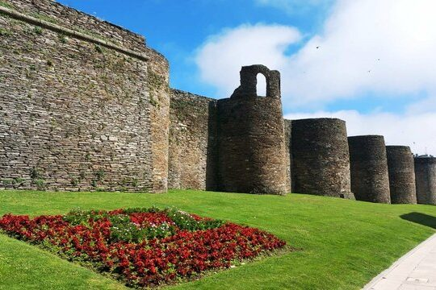
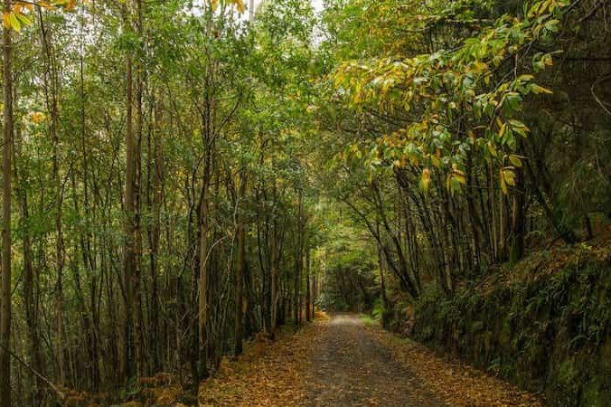
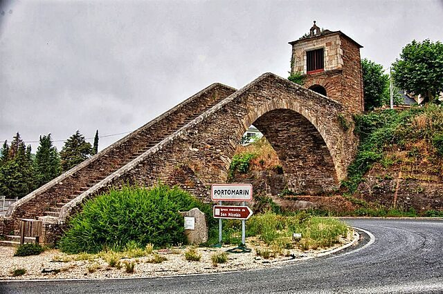
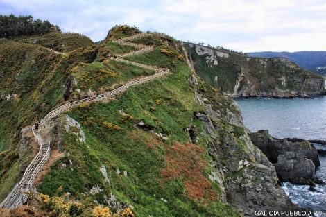
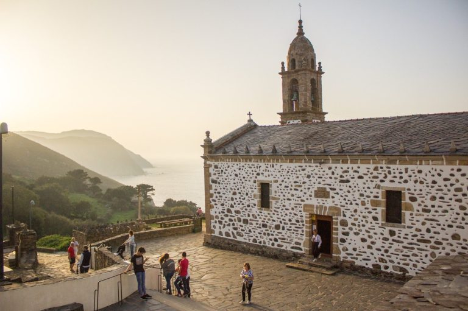
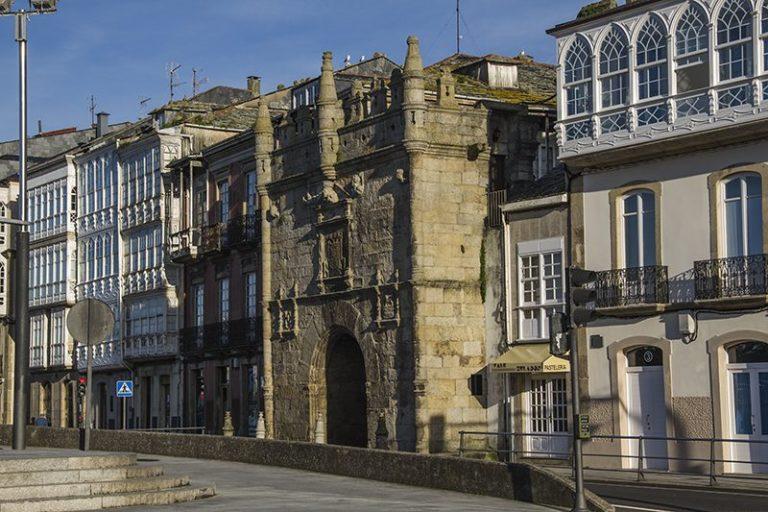

Alojamiento
Para todos aquellos que venís desde fuera, os facilitamos una relación de hoteles cercanos al lugar de la celebración:
Hotel Spa Attica21 Villalba
Es también el restaurante donde hacemos la celebración y cuenta con habitaciones que podéis reservar a través de llamada telefónica o vía mail e informando que la reserva es para la boda de Marta y Nel. NO permiten reservas a través de la web para que solo os podáis alojar los invitados de la boda.
Teléfono: 982.515.000
info.spavillalba@attica21hotels.com
HOTELES EN VILALBA (10 minutos en coche del lugar de la celebración):
En Vilalba tenéis más opciones de alojamiento (otros hoteles, pisos, apartamentos, casas) que podéis localizar en internet.
Lugares para visitar
Sabemos que muchos de vosotros vais a venir desde lejos para compartir con nosotros este día, si tenéis tiempo os recomendamos visitar los siguientes lugares:

Muralla Romana de Lugo
La impresionante muralla de Lugo fue construida en el año 13 antes de Cristo como muro de defensa para proteger la ciudad de Lucus Augusti. Tiene una longitud de más de 2 kilómetros y 10 puertas. Es la única muralla romana del mundo que se conserva entera.

Parque Natural Fragas do Eume
Las Fragas do Eume presumen de ser el bosque atlántico costero mejor conservado de Europa

Portomarín
La antigua villa de Portomarín fue inundada en 1963 cuando se construyó el embalse de Belesar. Una de las grandes curiosidades de Portomarín tal y como lo ves hoy, es que muchos de sus principales monumentos fueron trasladados piedra a piedra hasta la actual villa, para que no desaparecieran bajo las aguas del embalse

Punta Fuciño de Porco
En el municipio de O Vicedo en Lugo encontramos la punta del Fuciño do Porco, que significa «hocico de cerdo». Se trata de una formación rocosa denominada geográficamente Punta Socastro.
Se trata de una ruta hacia el extremo de dicha formación rocosa a través de una impresionante pasarela de madera en forma de zigzag. En su recorrido se puede apreciar la inmensidad del Mar Cantábrico y de unas vistas a ambos lados del sendero de inigualable belleza.

San Andrés de Teixido
Va de muerto el que no fue de vivo
Todos los gallegos sabemos que es obligado peregrinar una vez en la vida a esta santuario, pues el que no lo haga le tocará hacerlo en la otra vida en forma de insecto o animal reptante.

Viveiro
Viveiro está en plena Mariña lucense, en las Rías Altas. Esta villa marinera tiene un amplio legado medieval y una bonita ría con la que comparte nombre.